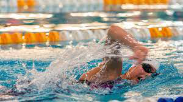

Getting Started
First, you want to ensure you're all prepared when beginning in the water. Here are a few rookie mistakes you should try to avoid making your swimming experience the best possible. Number one: bathing suits. most people's only experience with bathing suits comes from summers at the beach or vacations by the pool. While bikinis and swim trunks may be a good idea for a fun day at the beach, they’re not ideal for swimming laps. For women, a good option would be a one-piece designed for competitive swimming. For men, the best option would be jammers or those tiny little speedos if you're feeling frisky. These swimsuits eliminate unnecessary drag in the water and help you to move freely and effectively.
Second is goggles. It's really important to get a nice pair of swimming goggles before beginning your swimming journey. Avoid any big snorkeling goggles that cover your nose. While these may feel more comfortable for new swimmers, leaving your nose uncovered while swimming laps is essential. It helps you to breathe and swim better overall. The best goggles for swimming are basic goggles that cover your eyes and wrap around your head. If you want to look like a pro, buy a bungee cord to replace the silicone one most goggles come with. Bungee cords help to make a more comfortable fit and make your goggles stay up better.
The last thing you'll need for your swimming journey is a swim cap. This goes for anybody with long hair. Contrary to popular belief, the swim cap isn't there to keep your hair dry; it's actually there to help you move faster in the water. If you have really long hair, it makes a big difference in your speed when trying to swim laps. Swim caps can be difficult to handle at first, so try asking a friend to help put them on. A swim cap isn't always necessary if you have short hair, but it always helps.
Now that we have covered the basics, you're ready to start! All of the following information will help build skills for the most common stroke: freestyle.
Kicking
Swimming can be broken down into three things: your pull, your kick, and how those two things work together. In my opinion, the most essential thing in swimming is your kick. To get started, you're going to want to use a kickboard. When using a kickboard, you don't want to lay on top of it; you want to hold it straight out in front of you with straight arms. Reference the photo to help.
We're going to focus on our futter kick. A common mistake people make when kicking is bending their legs too much. There should be little bend in your legs when doing a freestyle kick. Your feet should be pointed like a ballerina, and your feet should be placed just below the surface of the water, enough to create some splashing while still kicking beneath the water. By isolating your legs using the kickboard, this allows you to feel out what works best for you. By not allowing any movements other than kick, you can feel how fast you can move with just one piece of the puzzle.
You can do drills to help with your kick. One drill you can do is to change the level at which your legs are at in the water to feel what feels best for you. Another drill you can do is starting with a slow kick and moving up too fast to feel the difference between the speeds.
When you begin your lap off the wall, it's essential to use a different kind of kick called the dolphin kick. This is a kick where you put your legs together and kick them together to push more water. This kick is performed when you push off the wall and swim under the water.
Like the flutter kick, you should only allow a little bend in your legs. Remember that when you butterfly kick, it is a full-body movement; your core should be engaged and moving along with your legs! To practice the butterfly kick, you can perform the same drills and techniques listed for the flutter kick; replace them with the butterfly kick.
Pull
Onto the second piece of the puzzle, the pull! Isolating your pull from the rest of your stroke is the best way to develop your arm strength and technique. To do this, the best thing to use is a pool buoy. This is a piece of swim equipment that goes in between your legs and helps them to float. This allows you to do your pull without worrying about kicking as well. Here’s one thing to always remember when doing you’re doing pull: the invisible line. When you swim (especially in freestyle), you should always imagine that there is an invisible line going all the way down your body. You NEVER cross this line with either of your arms. This is something that everyone tends to naturally do (even the professionals!) This will not only lead to a more effective stroke but will also help you in the long run.
If you’re working on freestyle pull, remember to keep your arms bent and reach forward, pulling all the way back down towards your butt. There are several drills that help you to improve your stroke. One drill is called kick and roll. This is where you put one arm straight in front of you and one arm below you at your side. You start on your left side, kick for 3 seconds, pull and roll onto your right side. This drill gives you a feeling of how your arms and legs work together. Another drill is called archer. This is where you hold one arm out in front of you, and one arm is pointed at a 90* angle (like an archer.) You kick for 3 seconds, then switch arms. This drill should help you understand your arm placement in your stroke.